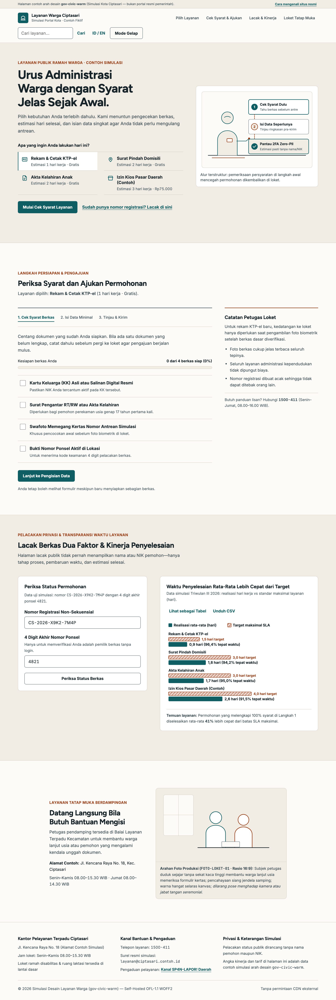

Layanan Warga & Portal Perizinan Ramah
Gagasan Besar: Layanan publik yang terasa seperti dibantu petugas loket yang sabar dan menjelaskan syarat sebelum formulir diisi.


Tipografi (Self-Hosted WOFF2)
Urus KTP-el & Pindah Domisili
Display
Figtree + Body Inter + Kode JetBrains Mono
0,9 hari · 96,4% tepat waktu · CS-2026-X9K2
Palet & Rentang Kontras Terukur
#F2EDE4Hangat 13,80:1#FCFBF8Kertas 15,55:1#0F5E63Teal 7,50:1#9A3F16Terakota 5,82:1Hasil Audit Nyata (task-881)
- slop-audit 2 Arah
- LULUS (3 visual, 2 grafik, 12/12 tabular)
- axe-core (4 State)
- 0 pelanggaran (1 incomplete SVG <text>)
- Lighthouse Mobile / Desk
- 100/100/100/100 (LCP 1,1 s / 0,3 s)
- Ukuran & Request CDN
- 83.449 B HTML · 188 KiB · 0 CDN
Uji Kaku (Ringkas)
Hero dibuka pemilih 4 tugas warga terhubung ke wizard cek syarat + bantuan sticky petugas + pelacak Zero-PII & grafik SLA bertabel. Menolak ornamen pada Langkah 2 form agar pengisian fokus.
Kekuatan & Kelemahan Jujur
- Kuat: Sangat cocok meredam kecemasan warga pada form multi-langkah; alur syarat sebelum input memangkas gagal kirim.
- Lemah / Ketergantungan: Panjang halaman cukup tinggi di ponsel (
6.534pxpada375px) jika semua bagian diletakkan di 1 halaman; ilustrasi loket tetap butuh foto petugas asli saat produksi agar tidak terasa ilustratif saja.